They let us into Canada! The view of Vancouver and False Creek from Granville Island.
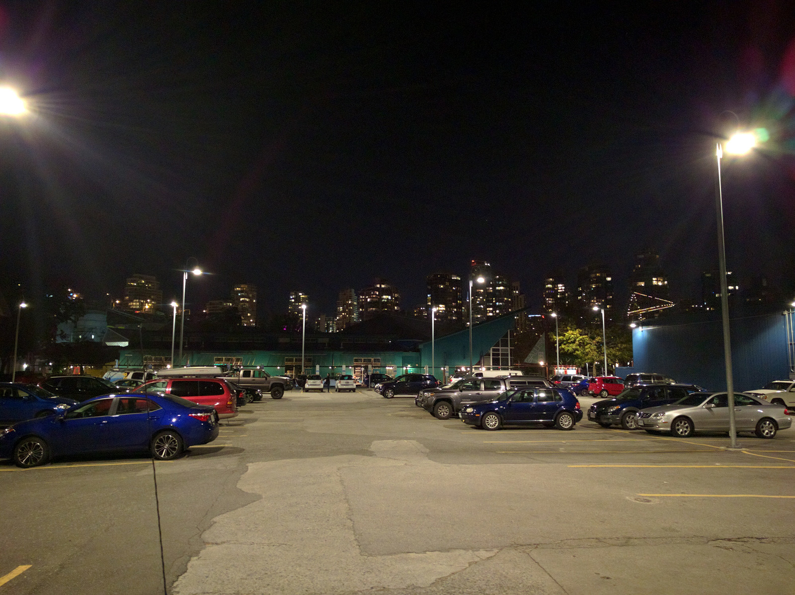
Home for the night below the Vancouver skyline on Granville Island.
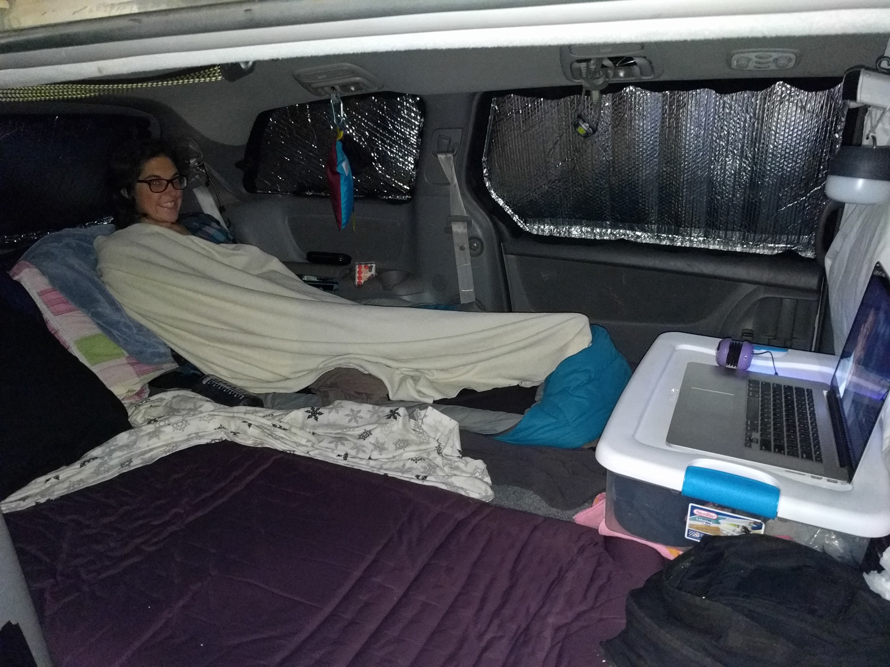
Van life in Vancouver.
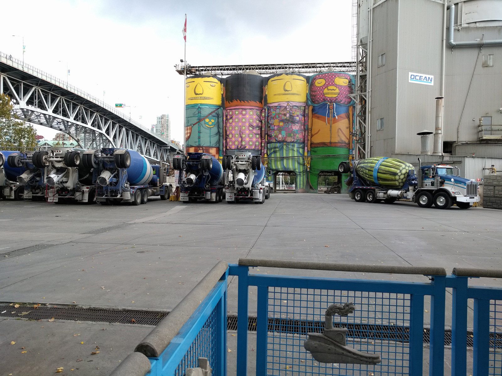
Cool industrial art. Love the asparagus bunch on the concrete truck.
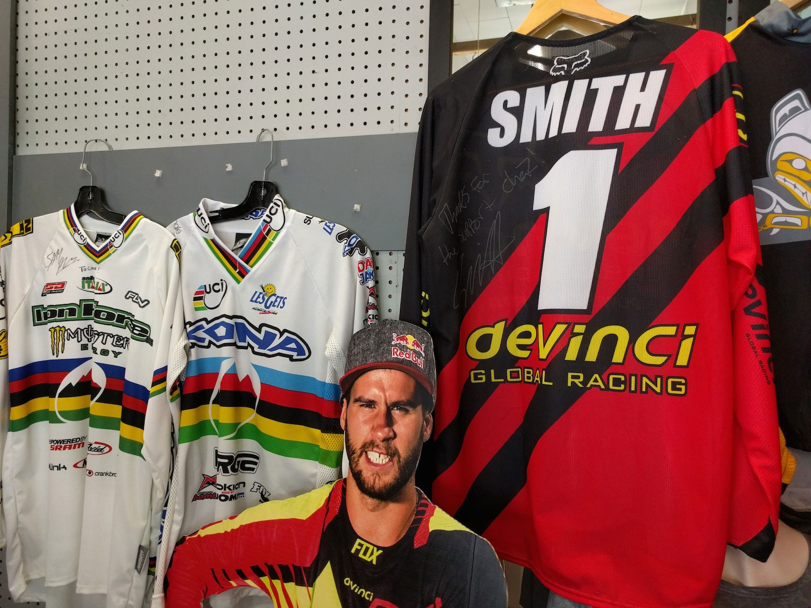
We had to visit the historic Cove bike shop on the North Shore of Vancouver. #LongLiveChainsaw
Day 11 we rode Mt Fromme. Specifically we rode 7th Secret, one of the new school trails on the North Shore of Vancouver.
One of many skinnies on the North Shore.
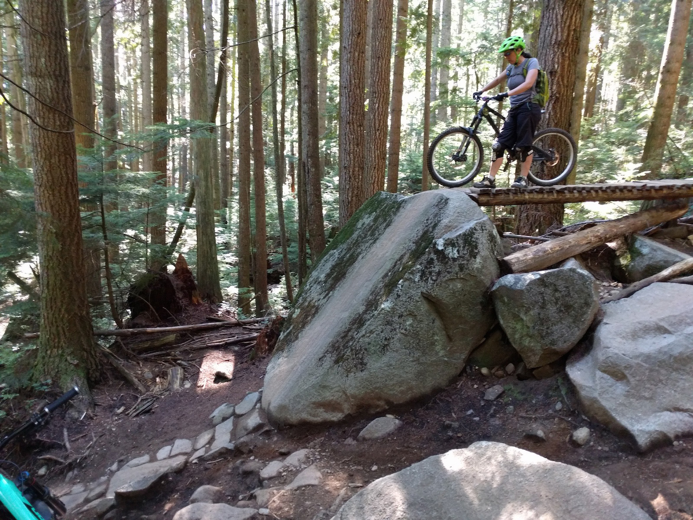
Life goals. Espresso rock roll, I'll get you next time.
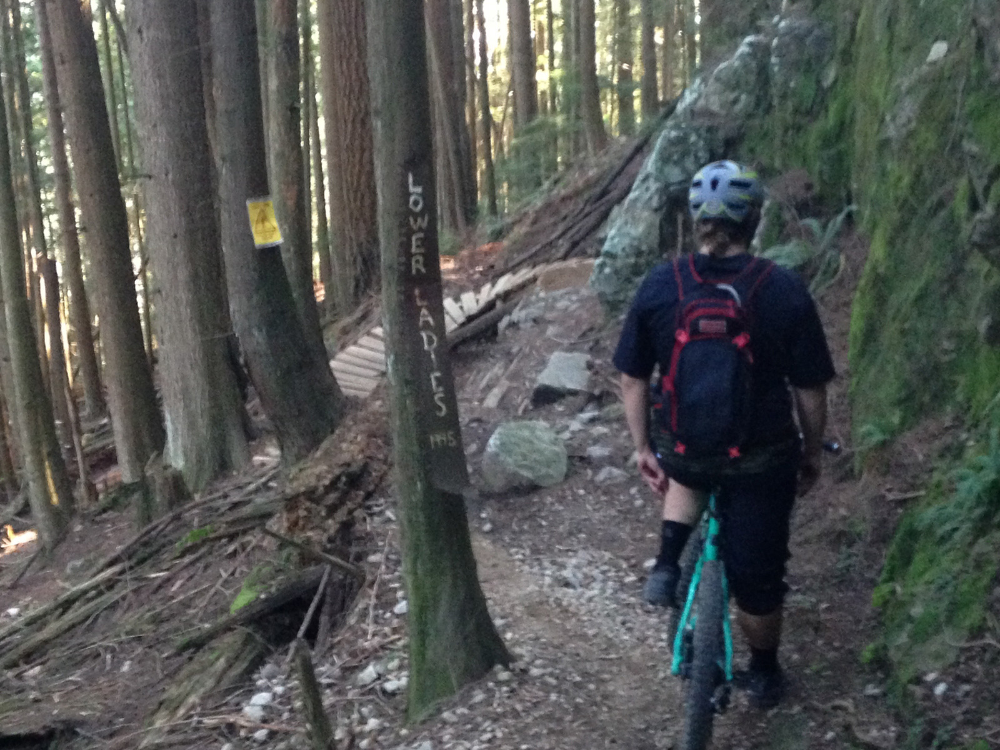
Ladies Only trail built in 1995. We had to checkout this classic North Shore trail even though it was way over our heads.
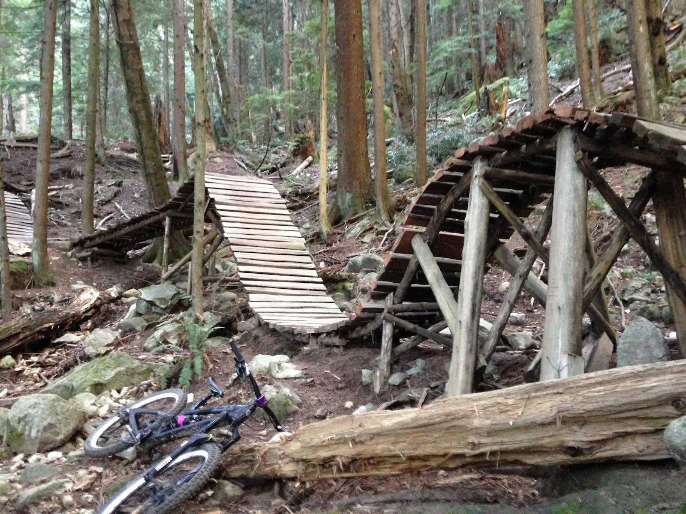
The Monster AKA the rollercoaster.
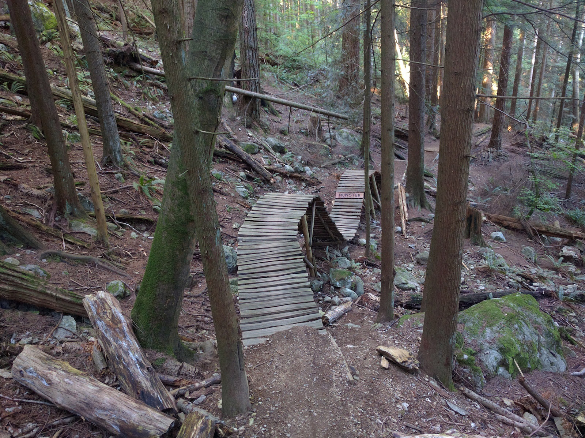
Crazy Canucks.
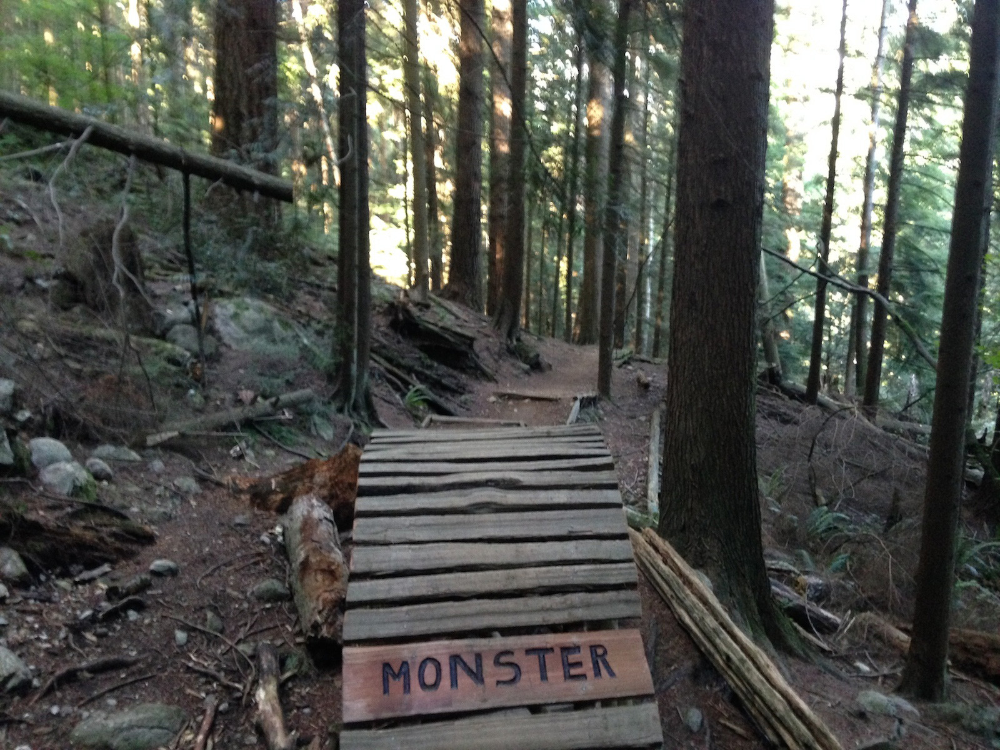
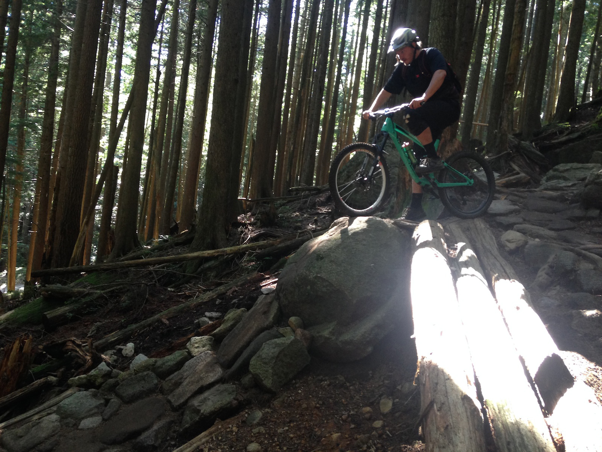
Canadians love their rock rollers. We do too.
Easy peasy. Just kidding. Much respect to the guys that built and rode these trails back in the nineties.
A ridable section!
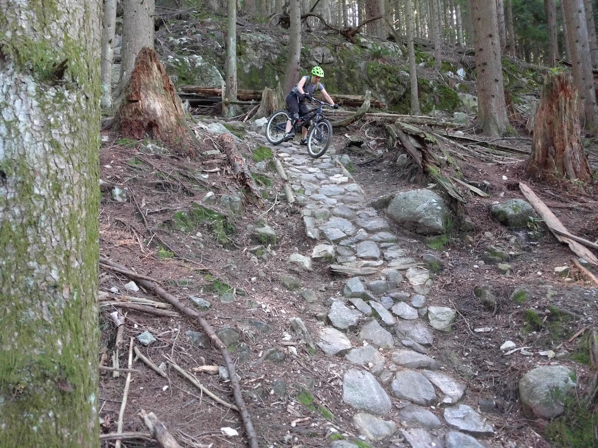
Foot out still counts. Steep and anything but soft.
Some good ole slow speed tech on the North Shore. Sufficiently scared. Time for indian food.